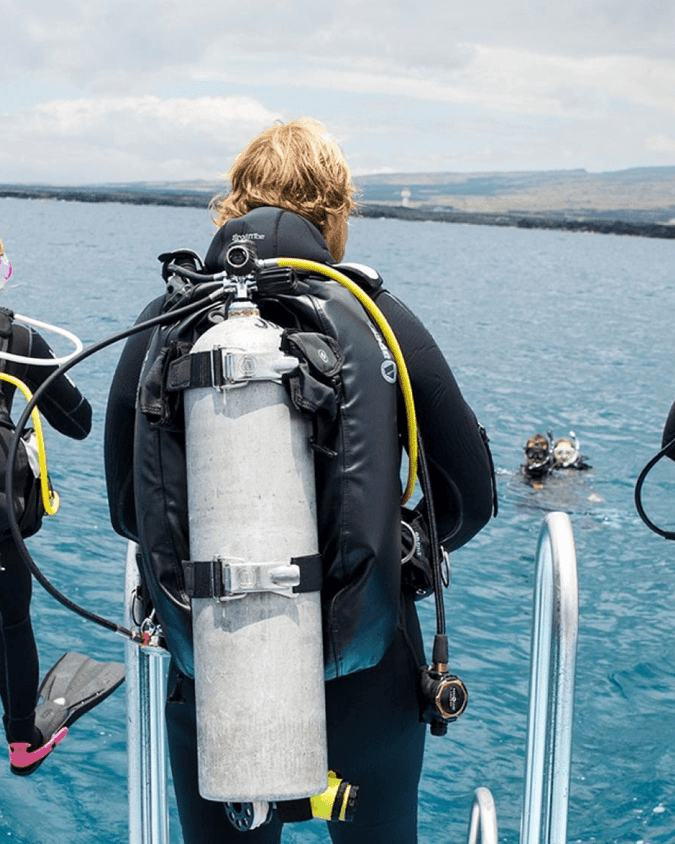
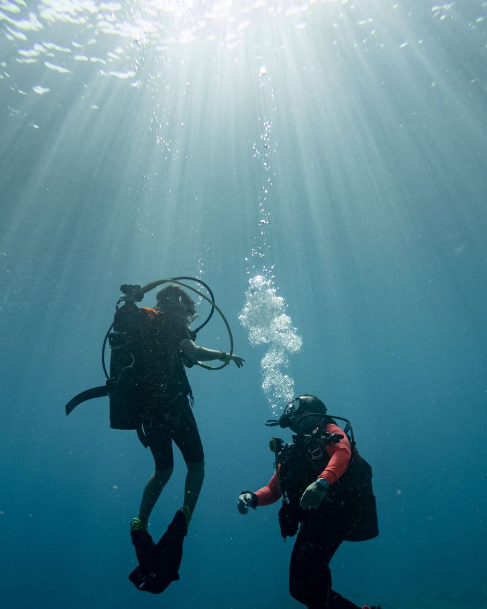

0 m Instructor Courses
From diver to instructor
Sunfish Divers has been a PADI 5 Star Instructor Development Centre since 2008, with a full-time PADI Course Director on the team.
Two professional courses start here: the PADI Assistant Instructor Course and the PADI Instructor Development Course. Follow the page down to see how they fit together.

Why train here
Teaching divers for over 40 years
We have been diving in Ayia Napa since 1982, and we are still at the same location.
Learning to teach is easier in a centre where teaching is the everyday work. That is the difference you can expect here.
- PADI 5 Star Dive Centre since 1990
- PADI 5 Star Instructor Development Centre since 2008
- A full-time PADI Course Director
- Multilingual instructors
A course in its own right
PADI Assistant Instructor Course
On its own, or as part of the IDC
The Assistant Instructor Course is a professional course in its own right, and one of the four parts of the Instructor Development Course.
Take it alone and decide about the rest later, or fold it into the full IDC. Tell us which suits you and we will plan it with you.
- 18minimum age
- 2 waysalone, or within the IDC

The full programme
PADI Instructor Development Course
The IDC is where a diver becomes a teacher. It is made up of four parts, each one leading into the next.
We run the Instructor Development Course 2 to 3 times a year, so there is time to plan around your own diving and your own life.
-
Emergency First Response Instructor
Where the programme begins.
-
Assistant Instructor
Also offered as a course in its own right.
-
Open Water Scuba Instructor
The third part of the programme.
-
Master Scuba Diver Trainer
The fourth part, and the deepest point of the IDC.
Dates, packages and offers
Plan your IDC with us
- 4connected parts
- 2 to 3times a year
- 18minimum age
Email us for packages and offers.
Meet the Course Director
Guided by experience

Our Course Director
Dena Asimenou
Dena started diving in 1996 and joined Sunfish Divers as an instructor in 1998.
- 1996Started diving
- 1998Joined Sunfish Divers as an instructor
About ten years later, she became a Course Director. Today she is our full-time PADI Course Director.
Your next step
Ready when you are
Talk to us about instructor training
Tell us where you are in your diving and when you would like to start, and ask us about dates, packages and offers.